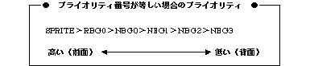

Return to previous page | Return to menu | Go to next page
void
Scroll function
RBG priority set
void slPriorityRbg0(num)
Uint16 num ;
num Drawing priority number (8 types from 0 to 7)
Give priority to rotating scroll.
The higher the priority number, the higher the display order, and the lower the priority number, the more the drawing is done on the back.
If the priority number is 0, the scroll surface is considered transparent and is not drawn.
None
If the same priority number is specified for other scroll planes and polygon planes, the priority order is as follows.

Note) POLYGON is included in the sprite.
Reference: Chapter 8 Scroll
slPriorityRbg0